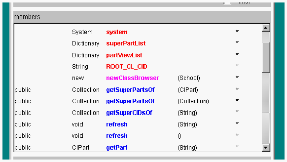

クラスメンバを照会する
クラスのメンバに関するクラスの情報は、そのメンバをダブルクリックすることによって簡単に照会できます。

- クラスの情報ーのメンバリスト（members）には、アトリビュート、コンストラクタ、メソッドが表示されています。

メンバのタイプは色で区別されています。
|
赤 |
|
アトリビュート |
|
ピンク |
|
コンストラクタ |
|
ブルー |
|
メソッド |
細字のメンバは上位実装クラスで宣言されているメンバです。
- クラス型のアトリビュートメンバをダブルクリックすると、そのクラスのインタフェースを表示するクラスブラウザが開きます。
- コンストラクタメンバをダブルクリックすると、そのコンストラクタの詳細情報が
constructor details 表示エリアに表示されます。
- メソッドメンバをダブルクリックすると、そのコンストラクタの詳細情報が実装パートビューの下部(
method details )に表示されます。
- 上位クラスに実装されたメソッドメンバをダブルクリックすると、そのクラスの実装パートビューを表示するクラスビューが開きます。
(c) 1996-1998 IPA, ETL, AT21, FSIABC, FXIS,
InArc, MRI, NUL, SBC, Sharp, TEC, TIS. All rights reserved.